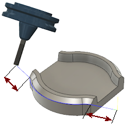

<div id="swarf5d_tangentialFragmentExtensionDistance"><p>パスの両端で接線方向に切削を延長します。</p>
<table class="tipTable" cellspacing="10">
<tr>
<td><center></center></td>
</tr><tr>
<td><center><p><b>切削の両端での接線延長</b></p></center></td>
</tr></table>
</div>